Blog
Pferdewissen zu Ernährungsthemen
Regelmäßige Beiträge zu Pferdegesundheit und Fütterung.
Alle Beiträge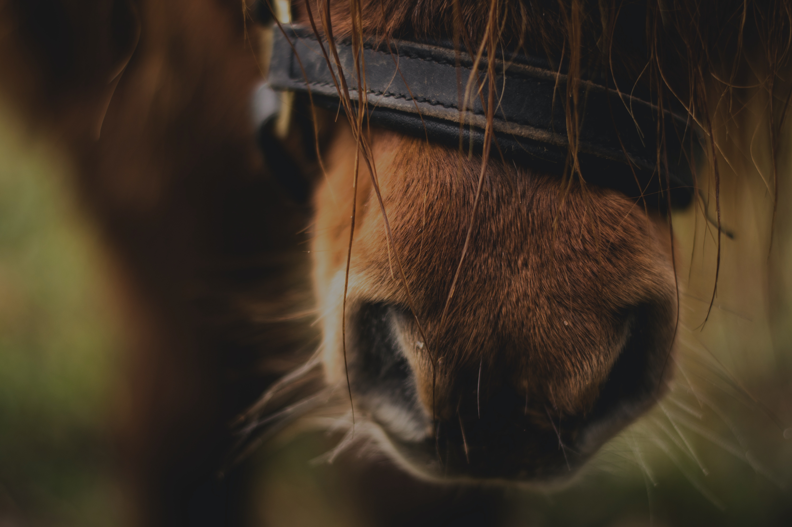
Die Grundlage für ein gesundes, leistungsstarkes Pferd liegt in der Fütterung. Ich helfe dir, die Ration deines Pferdes zu optimieren.
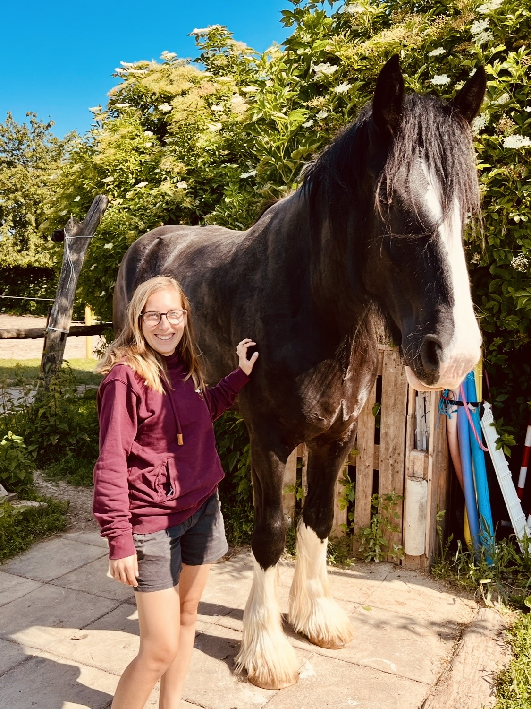
Mein bisher größtes Beratungspferd, Shire-Stute Saphira
Die Ernährung ist ein essentieller Hauptbestandteil für die Gesundheit und das Wohlergehen eines Pferdes. Jedoch ist das Angebot der Futtermittelindustrie immer unübersichtlicher, während die Bedürfnisse unserer Pferde vielschichtiger werden.
Um ein Pferd dauerhaft gesund zu erhalten, ist es sinnvoll, bereits im gesunden Zustand die Ration zu optimieren — wissenschaftlich und ganzheitlich. Spätestens wenn Kotwasser, Koliken, Haut-, Fell- und Hufprobleme oder Verhaltensauffälligkeiten auftreten, lohnt sich eine professionelle Beratung.
Von der schnellen Einschätzung bis zur umfassenden persönlichen Beratung — wähle das Paket, das zu dir passt.
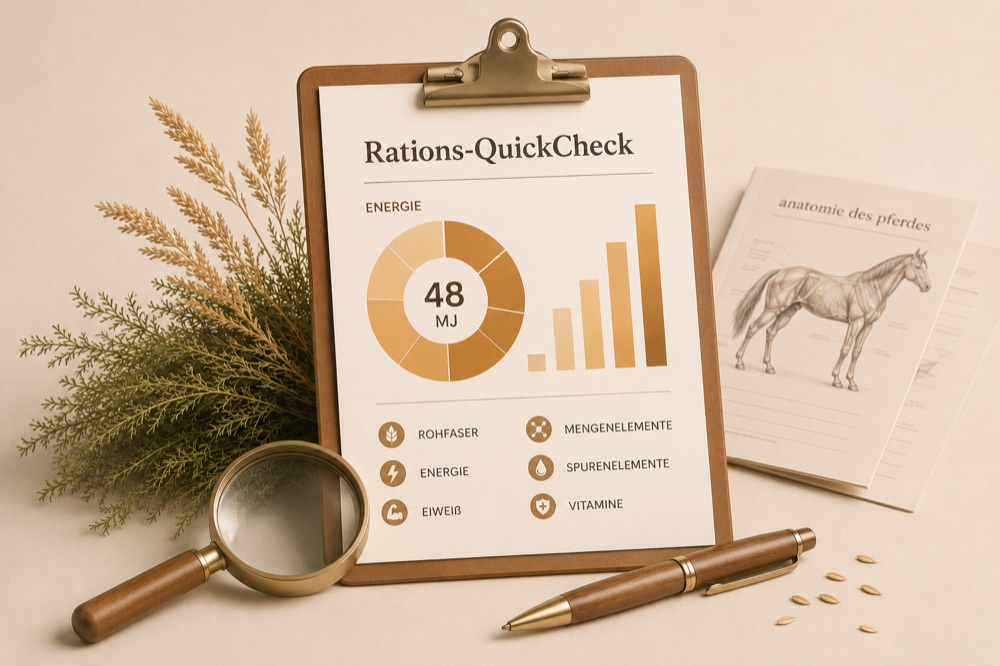
Du schickst mir Basisdaten und eine Heuanalyse, ich liefere dir ein klares Bild, wo deine Ration steht. Über- und Unterversorgung auf einen Blick.
Zum QuickCheck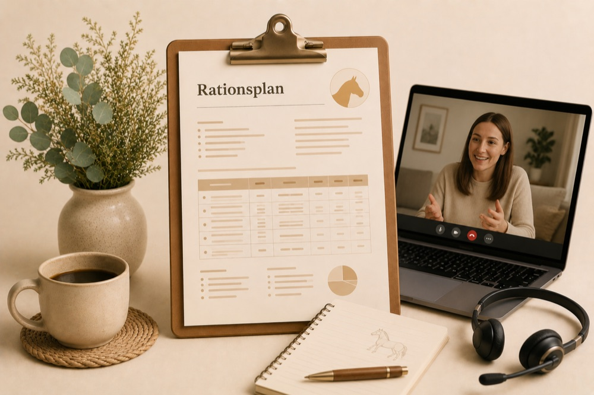
Ausführliche, persönliche Beratung. Ich sichte Vorbefunde, frage Fotos und Videos an und erstelle einen detaillierten Bericht mit Rationsplan.
Beratung anfragen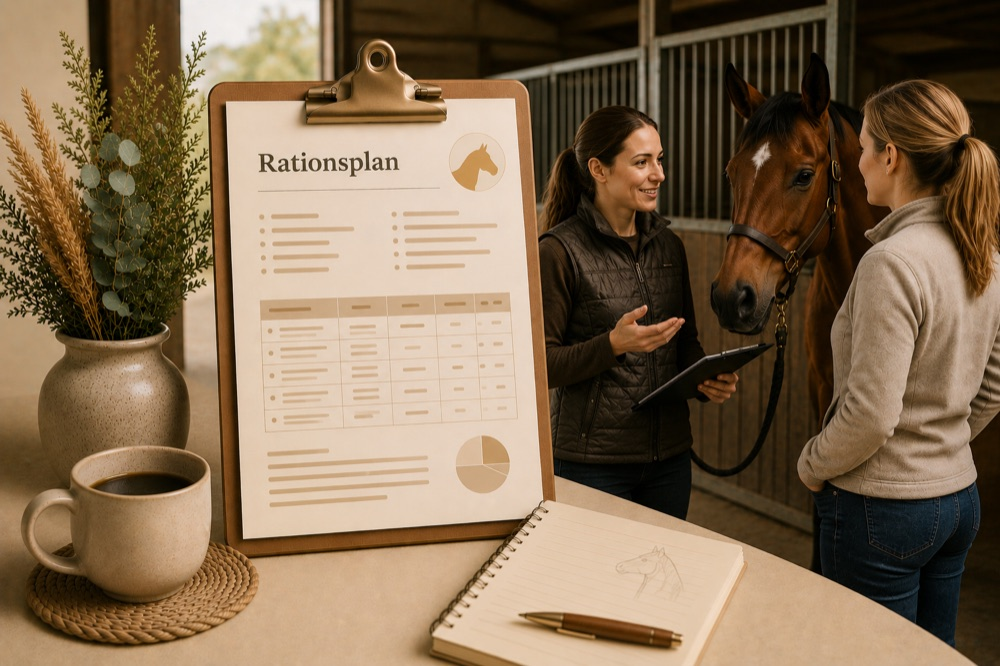
Ich komme zu dir und deinem Pferd in den Stall. Die professionelle Beurteilung von Körperkondition und Haltung ermöglicht eine maximal umfassende Beratung.
Beratung anfragenPraxisnah aufbereitet, wissenschaftlich fundiert — für alle, die ihr Wissen rund um Pferdeernährung vertiefen möchten.
Zur Kursplattform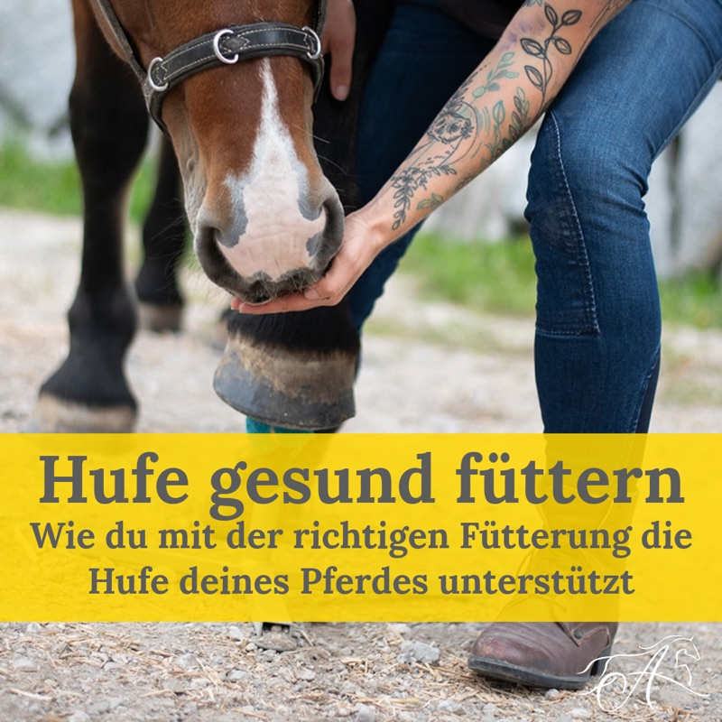
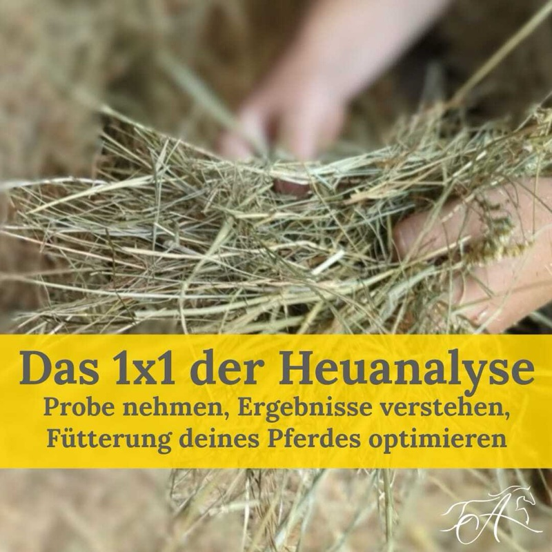
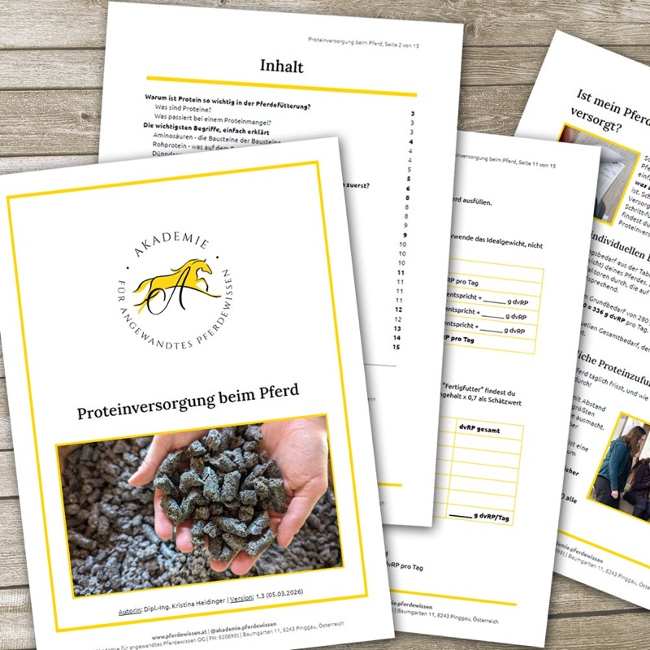
Vorher-Nachher-Dokumentationen aus der Praxis — Ergebnisse, die für sich sprechen.
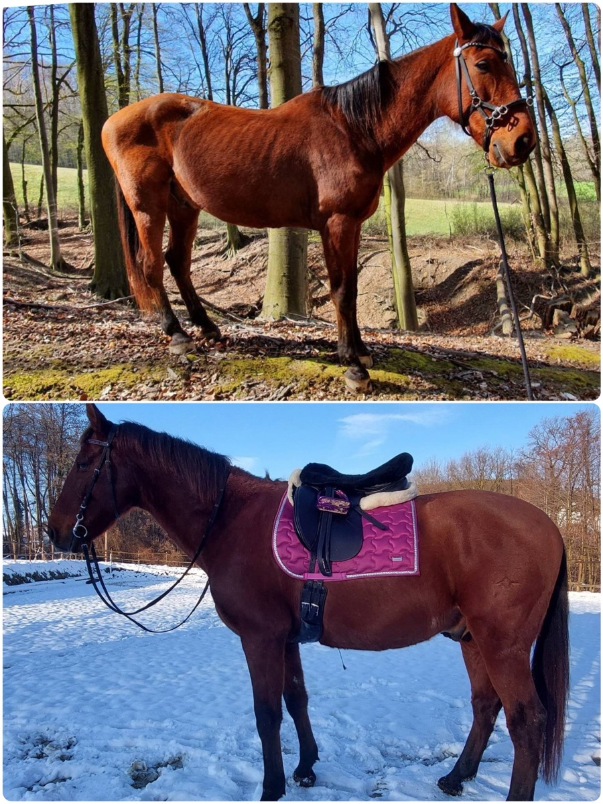
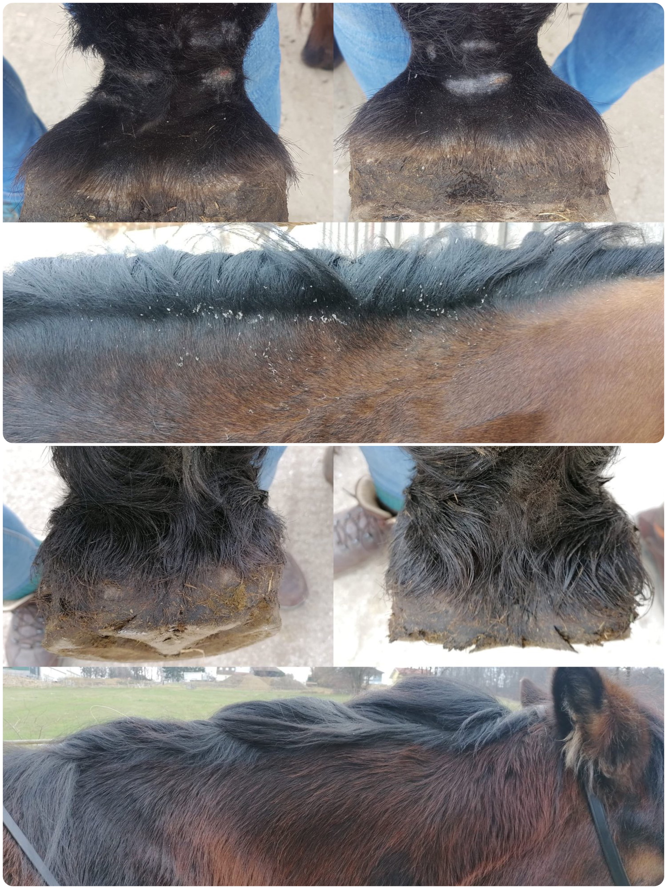
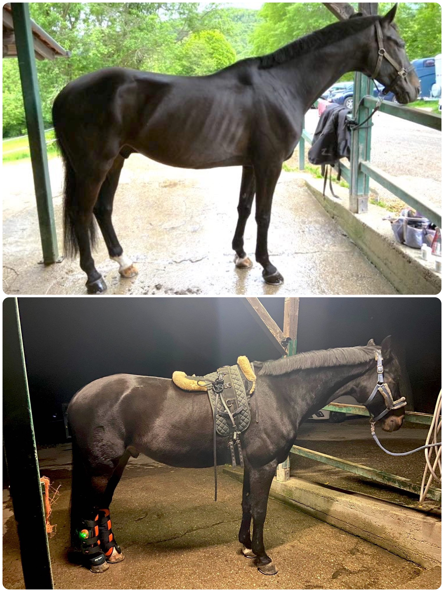
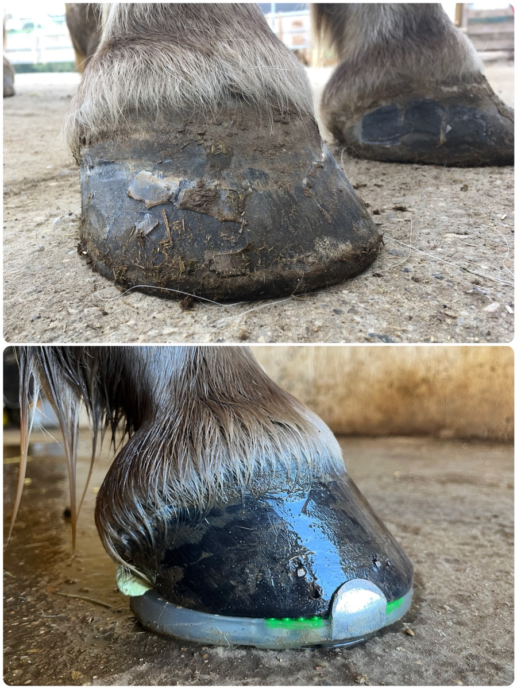
Hier findest du Antworten auf die häufigsten Fragen zur Futterberatung.
Regelmäßige Beiträge zu Pferdegesundheit und Fütterung.
Alle Beiträge